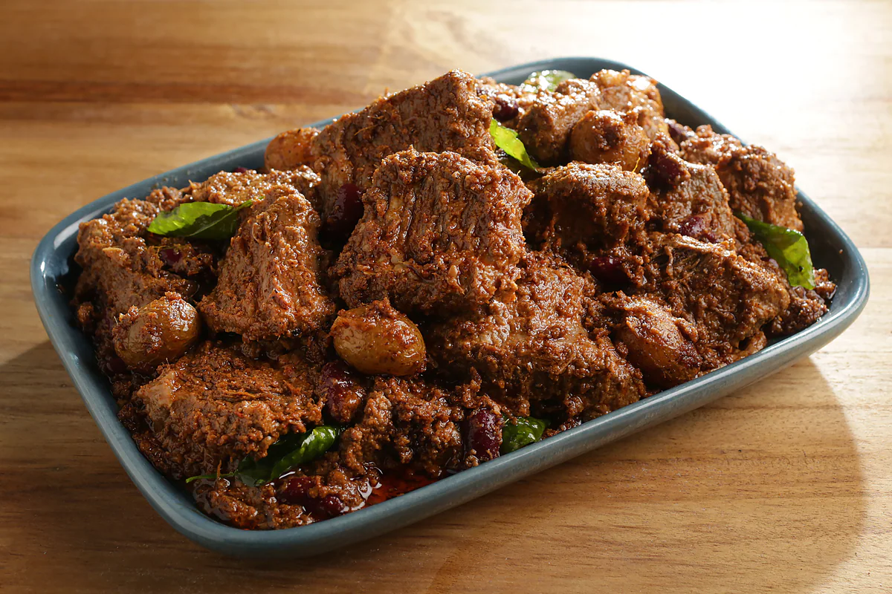
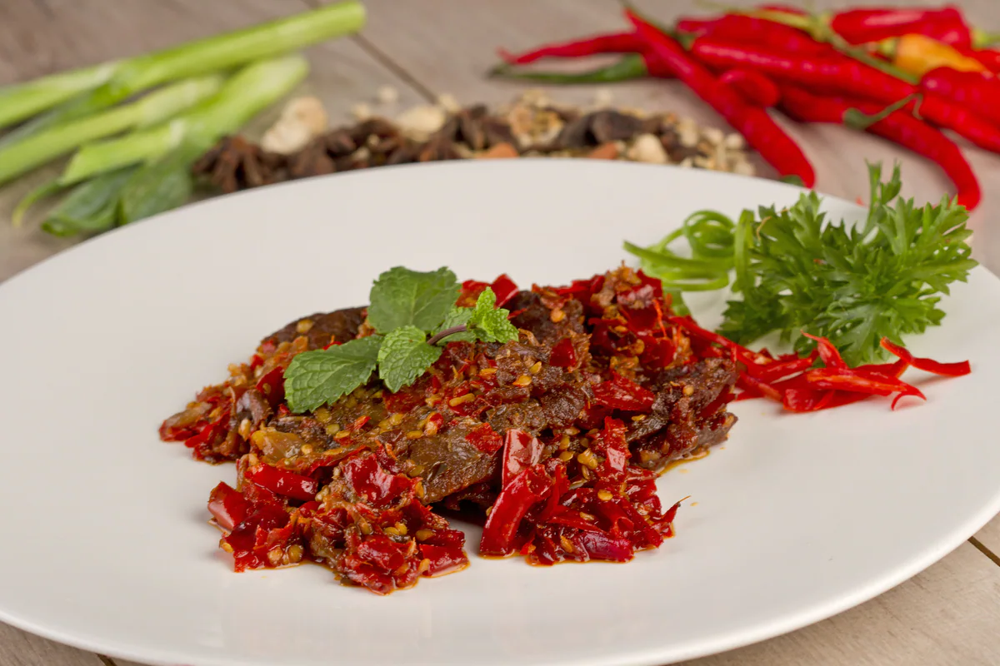
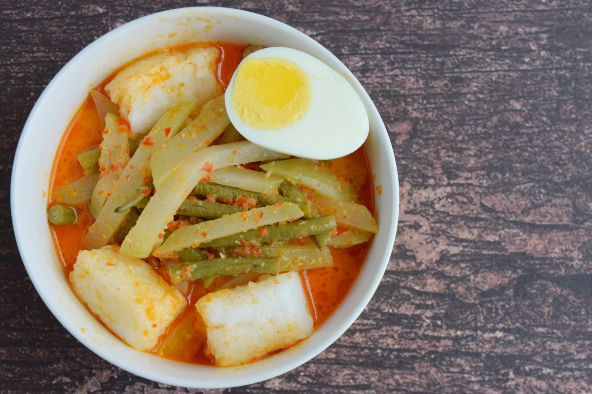

<!DOCTYPE html>
<html lang="en">
  <head>
    <!-- Required meta tags -->
    <meta charset="utf-8" />
    <meta name="viewport" content="width=device-width, initial-scale=1, shrink-to-fit=no" />

    <title>Tio Apriyandi</title>
  </head>
</html>
<!DOCTYPE html>
<html lang="en">
  <head>
    <!-- Required meta tags -->
    <meta charset="utf-8" />
    <meta name="viewport" content="width=device-width, initial-scale=1 shrink-to-fit=no" />

    <!-- Bootstrap CSS -->
    <link href="https://cdn.jsdelivr.net/npm/bootstrap@5.0.1/dist/css/bootstrap.min.css" rel="stylesheet" integrity="sha384-+0n0xVW2eSR5OomGNYDnhzAbDsOXxcvSN1TPprVMTNDbiYZCxYbOOl7+AMvyTG2x" crossorigin="anonymous" />
    <!-- Favicon-->
    <link rel="icon" type="image/x-icon" href="assets/favicon.ico" />
    <!-- Font Awesome icons (free version)-->
    <script src="https://use.fontawesome.com/releases/v5.15.3/js/all.js" crossorigin="anonymous"></script>
    <!-- Simple line icons-->
    <link href="https://cdnjs.cloudflare.com/ajax/libs/simple-line-icons/2.5.5/css/simple-line-icons.min.css" rel="stylesheet" />
    <!-- Bootstrap CSS -->
    <link rel="stylesheet" href="https://cdn.jsdelivr.net/npm/bootstrap@4.6.0/dist/css/bootstrap.min.css" integrity="sha384-B0vP5xmATw1+K9KRQjQERJvTumQW0nPEzvF6L/Z6nronJ3oUOFUFpCjEUQouq2+l" crossorigin="anonymous" />
    <!-- Google fonts-->
    <link href="https://fonts.googleapis.com/css?family=Source+Sans+Pro:300,400,700,300italic,400italic,700italic" rel="stylesheet" type="text/css" />
    <!-- icon -->
    <link rel="stylesheet" href="https://cdn.jsdelivr.net/npm/bootstrap-icons@1.5.0/font/bootstrap-icons.css" />
    <!--animate  -->
    <link rel="stylesheet" href="https://unpkg.com/aos@next/dist/aos.css" />
    <!-- css -->
    <link rel="stylesheet" href="css/styles.css" />
    <style>
      #sidebar-wrapper {
        margin-top: -50px;
      }
    </style>
  </head>
  <body id="home">
    <!-- navbar awal -->
    <a class="menu-toggle rounded" href="#"><i class="fas fa-bars"></i></a>
    <nav id="sidebar-wrapper">
      <ul class="sidebar-nav">
        <li class="sidebar-brand"><a href="#page-top">Menu</a></li>
        <li class="sidebar-nav-item"><a href="index.html">Home</a></li>
        <li class="sidebar-nav-item"><a href="index.html #about">About</a></li>
        <li class="sidebar-nav-item"><a href="index.html #services">Services</a></li>
        <li class="sidebar-nav-item"><a href="index.html #portfolio">Portfolio</a></li>
        <li class="sidebar-nav-item"><a href="index.html #contact">Contact</a></li>
      </ul>
    </nav>
    <!-- navbar akhir -->

    <!-- sejarah -->
    <section id="kuliner">
      <div class="container px-4 px-lg-5 mt-5">
        <div class="d-flex justify-content-center">
          <div class="row row-cols-1 row-cols-md-2 g-4">
            <div class="col d-flex justify-content-center">
              <div class="card" style="width: 400px" data-aos="fade-right">
                
                <div class="card-body">
                  <h5 class="card-title">Rendang</h5>
                  <p class="card-text">
                    Mari buka daftar makanan khas Sumatera Barat dengan menu yang legendaris satu ini. Ya, rendang. Menu yang dibuat dari olahan daging sapi dan aneka rempah ini pernah menduduki peringkat pertama dalam daftar 50 hidangan
                    paling lezat di dunia versi CNN International, lho. Sobat Pesona harus tahu nih, ternyata aneka bumbu dan rempah yang digunakan untuk mengolah rendang merupakan bumbu yang mengandung antiseptik. Meski saat ini rendang
                    sangat mudah dijumpai di berbagai daerah, penghasil rendang yang sangat legendaris dan terkenal kualitasnya tetap ada di Minangkabau, yakni daerah Payakumbuh.
                  </p>
                </div>
              </div>
            </div>
            <div class="col d-flex justify-content-center">
              <div class="card" style="width: 400px" data-aos="fade-left">
                
                <div class="card-body">
                  <h5 class="card-title">Sate Padang</h5>
                  <p class="card-text">
                    Kuliner olahan daging di Sumatera Barat lainnya adalah sate padang. Sebagian orang pasti kesulitan membedakan sate padang karena bentuknya berbeda-beda. Tak perlu bingung Sobat Pesona, karena sate padang memang hadir
                    dalam tiga jenis, yakni sate padang, sate padang panjang, dan sate pariaman. Selain berbeda daerah asalnya, ketiga sate tersebut juga hadir dalam sajian bumbu kacang yang berbeda. Sate padang menggunakan bumbu kacang
                    yang kental dan bentuknya menyerupai bubur. Sate pariaman memiliki kuah yang berwarna merah. Sedangkan, sate padang panjang biasanya disajikan dengan bumbu sate yang berwarna kuning.
                  </p>
                </div>
              </div>
            </div>
            <div class="col d-flex justify-content-center">
              <div class="card" style="width: 400px" data-aos="fade-up-right">
                
                <div class="card-body">
                  <h5 class="card-title">Dendeng Balado</h5>
                  <p class="card-text">
                    Makanan khas Sumatera Barat sepertinya memang didominasi oleh olahan daging sapi. Selain rendang dan sate padang, Sobat Pesona juga wajib menyantap dendeng balado. Makanan yang terbuat dari daging sapi ini dibuat dalam
                    bentuk irisan tipis, lalu digoreng, dan dilumuri dengan bumbu balado yang kaya akan rempah dan cita rasa kuat. Sobat Pesona akan mudah menjumpai restoran atau tempat makan yang menjual dendeng balado dengan rasa otentik
                    di Kota Padang, Sumatera Barat.
                  </p>
                </div>
              </div>
            </div>
            <div class="col d-flex justify-content-center">
              <div class="card" style="width: 400px" data-aos="fade-up-left">
                
                <div class="card-body">
                  <h5 class="card-title">Lontong Sayur</h5>
                  <p class="card-text">
                    Makanan khas Padang yang tak kalah populer dari rendang adalah lontong sayur. Makanan yang biasanya dijadikan menu sarapan oleh orang Minang ini punya cita rasa yang khas dan juga kaya akan rempah. Kuah santan yang
                    kental serta bumbunya yang gurih mampu memikat lidah para pecinta kuliner seantero negeri. Selain di daerah Padang, Sobat Pesona bisa mencoba lontong sayur khas Minang ini di daerah Pariaman, yang lokasinya tidak begitu
                    jauh dari Kota Padang.
                  </p>
                </div>
              </div>
            </div>
            <div class="col d-flex justify-content-center">
              <div class="card" style="width: 400px" data-aos="fade-up-right">
                
                <div class="card-body">
                  <h5 class="card-title">Ayam Pop</h5>
                  <p class="card-text">
                    Sobat Pesona kurang suka dengan daging sapi? Tak perlu khawatir, karena masakah khas Sumatera Barat ada juga yang berbahan utama daging ayam. Keunikan dari olahan ini adalah daging ayam akan tetap berwarna putih pucat
                    meski sudah digoreng. Bagaimana bisa? Warna ayam tidak menjadi coklat seperti ayam goreng pada umumnya karena sebelum digoreng, ayam tersebut sudah diolah dan diberi bumbu. Ayam itu direbus dengan air kelapa serta diberi
                    bumbu bawang putih. Sangat unik bukan? Jika ingin merasakan ayam pop yang asli dan otentik, Sobat Pesona bisa datang langsung ke daerah Bukittinggi, Sumatera Barat.
                  </p>
                </div>
              </div>
            </div>
            <div class="col d-flex justify-content-center">
              <div class="card" style="width: 400px" data-aos="fade-up-left">
                
                <div class="card-body">
                  <h5 class="card-title">Ikan Asam Padeh</h5>
                  <p class="card-text">
                    Berwisata kuliner #DiIndonesiaAja, terutama di Sumatera Barat sepertinya belum lengkap jika tak mencoba ikan asam padeh. Menu yang satu ini biasa juga dikenal dengan nama ikan asam pedas dalam Bahasa Indonesia. Masakan
                    dengan rasa asam dan pedas ini siap memberikan sensasi segar pada lidah dan perut Sobat Pesona. Tak terbatas pada satu jenis ikan saja, menu ikan asam padeh bisa menggunakan berbagai jenis ikan, mulai dari ikan tongkol,
                    kakap, cumi, gurame, hingga ikan kembung. Tak sabar ingin mencicipinya? Sobat Pesona bisa langsung meluncur ke daerah Solok, Padang Panjang, atau Pariaman untuk merasakan kelezatan ikan asam padeh yang otentik.
                  </p>
                </div>
              </div>
            </div>
            <div class="col d-flex justify-content-center">
              <div class="card" style="width: 400px" data-aos="fade-up-right">
                
                <div class="card-body">
                  <h5 class="card-title">Itiak Lado Mudo</h5>
                  <p class="card-text">
                    Sudah pernah mencoba makanan khas Sumatera Barat bernama itiak lado mudo? Kuliner dari olahan daging bebek ini merupakan salah satu kuliner khas dari daerah Agam, Sumatera Barat. Hadir dalam rasa pedas dan gurih, itiak
                    lado mudo disebut-sebut sebagai menu favorit wisatawan lokal hingga mancanegara, lho. Nah, jika Sobat Pesona ke Ngarai Sianok, wajib sekali menyantap kuliner satu ini, ya. Di sana ada sebuah rumah makan yang menyajikan
                    itiak lado mudo sebagai menu utamanya dan selalu ramai pengunjung. Sambil menyantap itiak lado mudo yang lezat, Sobat Pesona juga bisa melihat pemandangan Ngarai Sianok yang memesona.
                  </p>
                </div>
              </div>
            </div>
            <div class="col d-flex justify-content-center">
              <div class="card" style="width: 400px" data-aos="fade-up-left">
                
                <div class="card-body">
                  <h5 class="card-title">Lamang</h5>
                  <p class="card-text">
                    Inilah kudapan klasik khas Sumatera Barat yang masih eksis hingga saat ini. Lamang merupakan olahan ketan yang dicampur dengan santan. Ketan tersebut akan dibungkus dengan daun pisang lalu dimasukkan ke dalam bambu untuk
                    selanjutnya dibakar. Jika Sobat Pesona ingin mencicipi lamang dari tanah kelahirannya, datanglah ke daerah Tanah Datar, Sumatera Barat. Cuaca yang dingin di Tanah Datar, akan terasa lebih hangat saat Sobat Pesona
                    menyantap lamang yang masih hangat.
                  </p>
                </div>
              </div>
            </div>
            <div class="col d-flex justify-content-center">
              <div class="card" style="width: 400px" data-aos="fade-up-right">
                
                <div class="card-body">
                  <h5 class="card-title">Sala Lauak</h5>
                  <p class="card-text">
                    Indonesia punya banyak sajian kuliner, mulai dari makanan berat hingga cemilan yang nikmat. Salah satu camilan yang sangat menggoda untuk dicoba adalah sala lauak. Kuliner yang satu ini adalah gorengan khas Pariaman.
                    Karena berbentuk bulat, banyak juga yang menyebut kudapan ini mirip dengan combro dari Jawa Barat. Bedanya, sala lauak tidak menggunakan oncom, melainkan teri atau udang halus. Gorengan ini memiliki tekstur renyah di
                    bagian luar, tapi lembut di bagian dalamnya.
                  </p>
                </div>
              </div>
            </div>
            <div class="col d-flex justify-content-center">
              <div class="card" style="width: 400px" data-aos="fade-up-left">
                
                <div class="card-body">
                  <h5 class="card-title">Bika Talago</h5>
                  <p class="card-text">
                    Jika Sobat Pesona sedang mengeksplorasi Bukittinggi dan mulai merasakan hawa dinginnya, saatnya menghangatkan tubuh dengan menyantap salah satu kuliner khasnya, yakni bika talago. Makanan ini akan disajikan
                    hangat-hangat, karena biasanya baru akan dimasak ke dalam tungku pembakaran ketika ada yang membeli. Bika talago memiliki rasa yang gurih dan manis berkat perpaduan antara tepung beras, kelapa parut, serta gula merah dan
                    gula putih.
                  </p>
                </div>
              </div>
            </div>
          </div>
        </div>
      </div>
    </section>

    <!-- sejarah -->
    <!-- Footer-->
    <footer class="footer text-center">
      <div class="container px-4 px-lg-5" data-aos="flip-right" data-aos-easing="linear" data-aos-duration="1500">
        <ul class="list-inline mb-5">
          <li class="list-inline-item">
            <a class="social-link rounded-circle text-white" href="https://github.com/tiomochenx"><i class="icon-social-github"></i></a>
          </li>
        </ul>
        <p class="text-muted small mb-0">Copyright &copy; Your Website 2021</p>
      </div>
    </footer>
    <!-- Optional JavaScript; choose one of the two! -->

    <!-- Option 1: jQuery and Bootstrap Bundle (includes Popper) -->
    <!-- Option 1: Bootstrap Bundle with Popper -->
    <script src="https://unpkg.com/aos@next/dist/aos.js"></script>
    <script>
      AOS.init();
    </script>
    <script src="https://code.jquery.com/jquery-3.5.1.slim.min.js" integrity="sha384-DfXdz2htPH0lsSSs5nCTpuj/zy4C+OGpamoFVy38MVBnE+IbbVYUew+OrCXaRkfj" crossorigin="anonymous"></script>
    <script src="https://cdn.jsdelivr.net/npm/bootstrap@4.6.0/dist/js/bootstrap.bundle.min.js" integrity="sha384-Piv4xVNRyMGpqkS2by6br4gNJ7DXjqk09RmUpJ8jgGtD7zP9yug3goQfGII0yAns" crossorigin="anonymous"></script>
    <script src="js/scripts.js"></script>
    <script src="https://cdn.jsdelivr.net/npm/bootstrap@5.0.1/dist/js/bootstrap.bundle.min.js"></script>
  </body>
</html>
